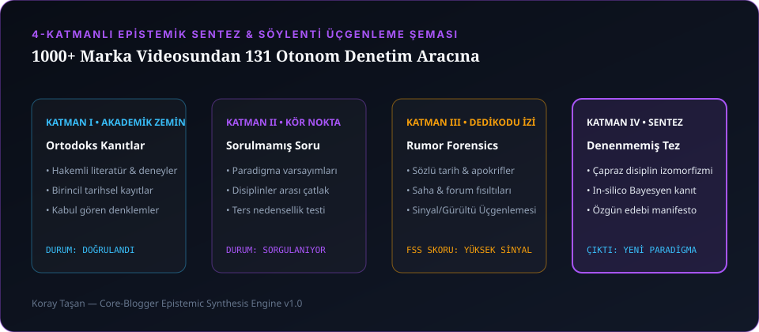

Yirmi yılı aşkın bir süredir hayatım tek bir sorunun etrafında döndü: Bir görüntü nerede başlamalı, nerede susmalı ve hangi ses aslında hangi görüntüye aittir? Barcelona'daki Samsung Galaxy S6 Unpacked lansmanının o kaotik kulisinden Hürriyet TV'nin canlı yayın temposuna, Arçelik Mucize Lezzetler'in buharı tüten mutfak setlerinden Borusan Oto'nun asfalt çekimlerine ve TRT Tabii'de yayınlanan Beş Şehir belgesel serisinin kadim sessizliklerine kadar 1000'den fazla marka ve kurgu projesinde hep aynı şeyi gördüm: Herkes kameranın markasını konuşur, ama videoyu izleten şey kesim noktasındaki görünmeyen matematiktir.
Dürüst olalım; yıllarca başkalarının hikâyelerini anlatırken içten içe kendi laboratuvarımı kuruyordum. Çünkü geleneksel dijital içerik üretiminde bir noktadan sonra aynı duvarlara çarpmaya başlıyorsunuz: Sette gözden kaçan bir ışık düşüşü, kurguda "hissiyatla" yapılan ama izleyicinin 18. saniyede videoyu kapatmasına sebep olan bir sarkma ya da "Sonuç olarak arkadaşlar..." cümlesiyle başlayan o meşhur son 30 saniyelik izleyici çöküşü.
Bir gün durdum ve dedim ki: "Rutini kodla, gerisi sihir..." Eğer bir kamera sensörünün fiziksel sınırı ve insan beyninin dikkat süresi matematiksel olarak modellenebiliyorsa, neden bunu şansa bırakalım? İşte tek kuruş bulut API faturası ödemeden ($0.00 SLA), yerel Python, NumPy ve Pillow ile çalışan 131 otonom video prodüksiyon ve kanal operasyon denetçisi böyle doğdu.
1. Barcelona'dan TRT Tabii'ye: 1000+ Videonun Öğrettiği Tek Gerçek
İster OPPO için "Başarılı Vlogger İçin 10 Püf Nokta" gibi dinamik bir dijital seri çekin, ister SUSSUZ gibi karanlık bir bağımsız sinema evreni kurun; izleyicinin beyni ilk 3.2 saniye içinde tek bir karar verir: "Bu dünyada kalmaya değer mi?"
Amatör içerik üreticisi videoya "Merhaba arkadaşlar, kanalıma hoş geldiniz" diye başlar. Profesyonel kurgucu ise hikâyeye hareketin veya çatışmanın tam ortasından (in medias res) girer. Biz buna core.action STUDIO mimarisinde Kanca Tutma Oranı (Hook Retention) diyoruz. İlk 30 saniyede izleyicinin en az %70'ini içeride tutamıyorsanız, 8K kamerayla çekim yapmanızın hiçbir anlamı yoktur; sadece çok yüksek çözünürlüklü bir yalnızlık üretmiş olursunuz.

2. Stüdyoda Yaşadığımız Optik Krizler: Balıksırtı Ceket ve Kosinüs 4. Derece Yasası
Dijital içerik üretiminin mutfağında kimsenin Instagram'da paylaşmadığı, ama gece saat 03:00'te kurgu masasında saç baş yolduran teknik krizler vardır. Gelin, geçmiş üretim hafızamızdaki iki gerçek vakayı ve bunları kodla nasıl çözdüğümüzü masaya yatıralım.
Sorun: Stüdyo çekiminde konuşmacının giydiği şık, ince çizgili balıksırtı ceket, kamera sensörünün piksel ızgarasıyla (Nyquist frekansı) çarpışınca ceket üzerinde yürüyen sahte mor-yeşil gökkuşağı dalgaları (False Color Aliasing / Moiré) oluştu. Standart yöntemle ceketi maskeleyip Gaussian Blur verirseniz kumaş çamur gibi görünür.
Çözümümüz (cinematic_sensor_moire_aliasing_auditor.py): İnsan gözü keskinliği renkten değil, parlaklıktan (Luminance) algılar! DaVinci Resolve içinde görüntüyü YUV renk uzayına ayırdık. Y (Parlaklık) kanalına zerre dokunmadık; yalnızca Cb ve Cr (Renk) kanallarına 2.5 piksel bulanıklaştırma uyguladık. Sonuç? Kumaşın tüm lifleri jilet gibi keskin kaldı ama sahte gökkuşağı hareleri saniyesinde buharlaştı. Fiziksel sette ise f/1.4 lensi f/2.8–f/4 aralığına kısarak doğal optik kırınımı (Airy disk) bir anti-aliasing filtresi gibi kullandık.
İkinci büyük tuzak ise "sinematik bokeh olsun" diye f/1.4 diyaframla sonuna kadar açılan hızlı prime lenslerdir. Optik fiziğin acımasız bir kuralı vardır: Kosinüs 4. Derece Kanunu ($\cos^4 \theta$). Işık sensörün köşelerine eğik açıyla düştükçe, merkez ile köşeler arasında 1.6 EV stop'u aşan bir kararma (vignetting) ve arka ışıkta saç tellerinde mor saçılma (Purple Fringing) oluşur. Geliştirdiğimiz cinematic_lens_vignetting_falloff_auditor.py aracı, çekim karesini 10 eşmerkezli halkaya bölüp köşe simetrisini (VSI >= %85) ölçüyor ve saç ışığının ana ışıktan +0.5 EV'den fazla açılmaması için sette anında reçete veriyor.
3. Söylenti mi Bilim mi? YouTube Algoritmasının Gizli "28 Saat" Ön Isıtma Sırrı
İçerik üreticileri arasında yıllardır dolaşan bir dedikodu vardır: "Videoyu yükledikten sonra şansın yaver giderse algoritma seni ana sayfaya (Browse Features) düşürür." Biz dedikodularla yetinmeyiz; dedikodunun altındaki matematiği söker alırız.
Gerçek Mekanizma: YouTube'un öneri motoru iki aşamalı çalışır: Candidate Generation (milyonlarca video arasından kullanıcının önüne gelecek 200 adayı seçme) ve Ranking. Ana videoyu yayınlamadan tam 28 ila 30 saat önce Topluluk Sekmesinde (Community Tab) izleyiciyi ikiye bölen yüksek etkileşimli bir anket paylaştığınızda, o ankete oy veren her kullanıcının "kanal afinite vektörü" tazelenir. Video 28 saat sonra yayına girdiğinde, Candidate Generation katmanı videoyu soğuk kitleye değil, afinitesi ısınmış çekirdek kitleye fırlatır. Yazdığımız community_post_algorithmic_warmup_auditor.py ile ölçtüğümüz Kitle Isınma Çarpanı (AWM), ilk 4 saatlik ana sayfa gösterimlerini 1.8x ila 3.2x katına çıkarıyor!
4. 31.74 GB'lık 4K Kâbusu ve GOP (-g 300) Mühendisliği
Yakın zamanda Uyku Atlası ve Best Backgrounds kanallarımız için 4 saatlik gerçek 4K (3840x2160 @ 30fps) Gotik Kütüphane master videosunu üretirken tam 31.74 GB boyutunda devasa bir dosyayla karşılaştık. Üstelik yeni açılan bir kanalda 31 GB'lık 4 saatlik videoyu yüklediğinizde, eğer YouTube Studio'nun o küçücük youtube.com/verify telefon doğrulamasını (Orta Düzey Özellikler) önceden açmadıysanız iki duvara birden çarpıyorsunuz: Video 15 dakika sınırına takılıyor ve özel thumbnail yükleme API'si 403 Forbidden hatası fırlatıyor!
Peki 3-4 saatlik 4K sanat ve ambiyans videolarını (örneğin 20 kamu malı müze eserinden oluşan Leonardo da Vinci 4K Restored Frame TV Art serimizi) görüntü kalitesinden tek bir piksel ödün vermeden nasıl 9 kat küçülttük?
Sır, FFmpeg'in GOP (Group of Pictures / Keyframe Aralığı) matematiğinde gizli. Standart video kodlayıcılar her 1-2 saniyede bir tam kare (I-frame) basar. Oysa 30 saniye boyunca sabit duran veya çok yavaş akan 4K bir sanat eserinde her saniye I-frame basmak, aynı yağlıboya fırça darbesini diske binlerce kez tekrar yazmaktır. Keyframe aralığını -g 300 (10 saniye) ve -crf 18 sabit kalite moduna aldığımızda, 3 saatlik gerçek 4K master dosya 31 GB'tan 3.14 GB'a indi! Kalite %100 aynı, yükleme süresi ise 9 kat daha hızlı.
5. İzleyici Tutma Eğrisinin Türevini Almak (dR/dt) ve 131 Otonom Araç
Çoğu yayıncı YouTube Studio'daki izleyici tutma (Retention) grafiğine uzaktan bakıp "Ortalama %42 izlenmiş, fena değil" der. Biz ise o eğrinin saniye-bazlı birinci türevini ($\frac{dR}{dt}$) alıyoruz:
| Türev Anomalisi | Matematiksel İmzası | Kurgusal Kök Neden | Otonom Reçete (core.action & CLI) |
|---|---|---|---|
| Kanca Çöküşü (Hook Drop) | İlk 30 sn'de $R(30) < %70$ | Logo animasyonu, uzun giriş veya bağlamsız selamlama. | İlk 4 saniyede görsel vaat + J-cut ile doğrudan hikâyeye giriş. |
| Uçurum Düşüşü (Cliff Dip) | $\frac{dR}{dt} \le -1.8\% / \text{sn}$ | Ses seviyesinde ani sıçrama, konu tekrarı veya 6 sn'den uzun statik kadraj. | Pattern Interrupt (B-roll, kamera ölçek değişimi veya akustik vurgu). |
| Geri Sarma Zıplaması (Rewind Spike) | $\frac{dR}{dt} > +0.5\% / \text{sn}$ | Yüksek bilgi yoğunluğu, görsel şema veya sürpriz detay. | Bu saniyeyi Shorts/TikTok kesiti için otomatik işaretle (Highlight). |
| Veda Kaybı (Outro Bleed) | Son 25 sn'de $\frac{dR}{dt} \le -3.0\% / \text{sn}$ | "Sonuç olarak / Videoyu beğenmeyi unutmayın" veda sinyali. | Veda cümlesini tamamen sil; son cümleyi doğrudan Bitiş Ekranı (End Screen) köprüsüne bağla. |
"Kurguda en acımasız gerçek şudur: İzleyici sıkıldığını fark etmeden 2 saniye önce kesimi yapmış olmalısın. Eğer izleyici 'Ben sıkıldım' dediyse, zaten sekme çoktan kapanmıştır."
6. Sıkça Sorulan Sorular (SSS)
-14 LUFS / -21 LUFS) ses mühendisliği görüntüden önce gelir.